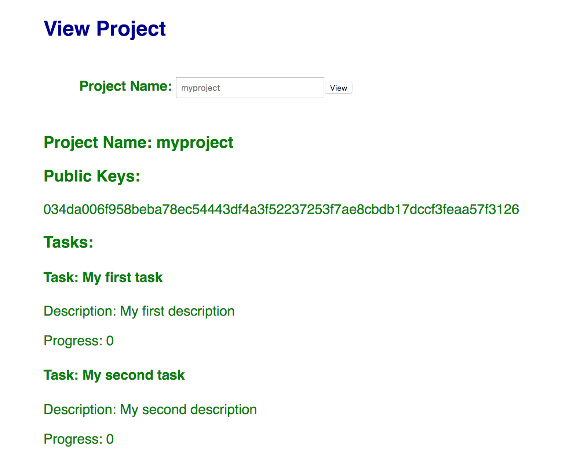

In this codelab we will add a "view project" feature to our frontend web app that can replace our use of the "print_project.py". The final product will look like this:

We will first begin with the frontend code from previous labs. ssh into your frontend VM instance and within your repository, create a directory named sawtooth04 and copy the contents of sawtooth02 over to it.
mkdir <your-course-repo>/sawtooth04 cd <your-course-repo> cp -r sawtooth02/* sawtooth04
Then, add, commit and push the new files.
git add sawtooth04 git commit -m "sawtooth04 initial commit" git push
We will be extending the code in sawtooth04 with the functionality in this codelab.
First, we must query state from the REST API of the backend VM instance we've just implemented. The backend gives us results in JSON format, which we can decode to a Python dictionary. In the next step, we will implement the function for extracting the data we need from the JSON dictionary. This function simply sets the global variables "project_node" and "tasks" and then calls the render function to render the webpage with the new project displayed.
@app.route('/viewproject',methods=['POST'])
def view_project():
project_name = request.form['project_name']
with urllib.request.urlopen("http://<IPaddr_of_backend>:8008/state") as url:
state = json.loads(url.read().decode())['data']
global project_node
global tasks
tasks = []
project_node = getProjectNode(state, project_name)
for task_name in project_node.task_names:
tasks.append(getTask(state, project_name, task_name))
return redirect(url_for('render'))The getData function simply pulls data from the JSON object using the address of the data from the merkle tree. It then decodes the data from base64 and returns it.
def getData(state, address):
''' Gets the data from a provided address.
State has two fields address and data. We can create the
address using functions in addressing.py. The data field
is encoded with base64 encoding.
'''
for location in state:
if location['address'] == address:
encoded_data = location['data']
return base64.b64decode(encoded_data)
return NoneThe following two functions get data from and address using the previous function. From there, they decode it using protobuf, find the correct entry in the container, and return it.
def getProjectNode(state,project_name):
''' Given a project name get a project node. '''
# make address of project metanode
project_node_address = addressing.make_project_node_address(project_name)
project_node_container = ProjectNodeContainer()
data = getData(state,project_node_address)
project_node_container.ParseFromString(data) # decode data and store in container
for project_node in project_node_container.entries: # find project with correct name
if project_node.project_name == project_name:
return project_node
return None
def getTask(state, project_name,task_name):
''' Given a project name and task name get a task node. '''
# make address of task node
task_address = addressing.make_task_address(project_name, task_name)
task_container = TaskContainer()
data = getData(state,task_address)
task_container.ParseFromString(data) # decode data and store in container
for task in task_container.entries: # find task with correct name
if task.task_name == task_name:
return task
return NoneNow that we have pulled and decoded the data from state, we can display it in the HTML. Recall that the web application calls the render() function when the web site is visited as shown below:
webapp.py
@app.route('/')
def render():
return render_template('page.html', fields=fields, action=action, project_node=project_node, tasks=tasks)This function performs a render_template operation on page.html. We can add additional HTML to page.html in order to display project information. Add the following HTML code to the bottom of the template. The code includes a form that has one text input and a submit button that will call view_project and pass it the project name from the text input. Underneath this the code for displaying a project is shown. It simply displays the project name, iterates through and displays the public keys, and then iterates through and displays the tasks.
<h2>View Project</h2>
<form action="{{ url_for('view_project') }}" method=post>
<p class="heading">Project Name: <input value="{{project_node.project_name}}" type=text name=project_name><input type=submit value=View></p>
</form>
<h3>Project Name: {{ project_node.project_name }}</h3>
<h3>Public Keys:</h3>
{% for public_key in project_node.public_keys %}
<p>{{public_key}}</p>
{% endfor %}
<h3>Tasks:</h3>
{% for task in tasks %}
<h4>Task: {{task.task_name}}</h4>
<p>Description: {{task.description}}</p>
<p>Progress: {{task.progress}}</p>
{% endfor %}
{% endblock %}Make sure your code works: Try creating a project and make sure it displays correctly: